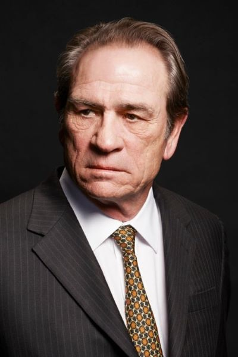

Early Life
Jones was born on September 15, 1946, in San Saba, Texas. His mother, Lucille Marie Jones (née Scott; 1928–2013),[3] was a police officer, school teacher, and beauty shop owner, and his Welsh father, Clyde C. Jones (1926–1986), was a cowboy and oil field worker. The two were married and divorced twice. He has said that he is of part Cherokee descent. He was raised in Midland, Texas, and attended the then-named Robert E. Lee High School.
Jones soon moved to Dallas and graduated from the St. Mark's School of Texas in 1965, which he attended on scholarship.
He attended Harvard College on need-based aid; his roommate was future Vice President Al Gore. As an upperclassman, he lived in Dunster House with roommates Gore and Bob Somerby, who later became editor of the media criticism site The Daily Howler. Jones graduated cum laude with a Bachelor of Arts degree in English in 1969; his senior thesis was on "the mechanics of Catholicism" in the works of Flannery O'Connor. At Harvard, he was a pupil of dramatist Robert Chapman.
Jones played guard at Harvard from 1965 to 1968. He was a member of Harvard's undefeated 1968 football team. He was named as a first-team All-Ivy League selection, and played in the 1968 Game. The game featured a memorable and last-minute Harvard 16-point comeback to tie Yale. He recounted his memory of "the most famous football game in Ivy League history" in the documentary Harvard Beats Yale 29–29.
Career
After graduating from Harvard in 1969, Jones moved to New York City to become an actor, making his Broadway debut in 1969's A Patriot for Me in a number of supporting roles. In 1970, he landed his first film role, coincidentally playing a Harvard student in Love Story (Erich Segal, the author of Love Story, said that he based the lead character of Oliver on aspects of two undergraduate roommates he knew while on a sabbatical at Harvard, Jones and Al Gore).
In early 1971, he returned to Broadway in Abe Burrows' Four on a Garden where he shared the stage with Carol Channing and Sid Caesar. Between 1971 and 1975 he portrayed Dr. Mark Toland on the ABC soap opera One Life to Live. He returned to the stage for a short-lived 1974 production of Ulysses in Nighttown, an adaptation of one episode from James Joyce's novel Ulysses, playing Stephen Dedalus opposite Zero Mostel's Leopold Bloom and directed by Burgess Meredith. It was followed by the acclaimed TV movie The Amazing Howard Hughes, where he played the lead role.
In films, he played a hunted escaped convict in Jackson County Jail (1976); a Vietnam veteran in Rolling Thunder (1977); an automobile mogul, co-starring with Laurence Olivier, in the Harold Robbins drama The Betsy; and a police detective opposite Faye Dunaway in the 1978 thriller Eyes of Laura Mars.
In 1980, Jones earned his first Golden Globe nomination for his portrayal of country singer Loretta Lynn's husband, Doolittle "Mooney" Lynn, in Coal Miner's Daughter. In 1981, he played a drifter opposite Sally Field in Back Roads, a comedy that received middling reviews. In 1982, he co-starred with Tuesday Weld in the HBO adaptation of The Rainmaker, directed by John Frankenheimer.
Notable Roles
- Men In Black 1997
- JFK 1991
- The Fugitive 1993
- No Country for Old Men 2007
- Lincoln 2012
- Coal Miner's Daughter 1980